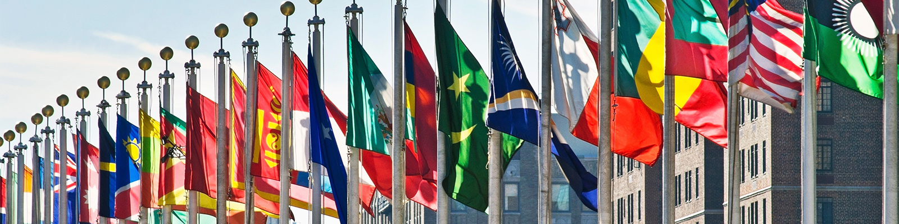

Effective Diplomacy Can Still Prevent War in Ukraine

US intelligence has said evidence emerged in the last two days to suggest that a Russian invasion of Ukraine is imminent. This means diplomacy is now more crucial than at any other point in this conflict if we are to stop war, and the loss of thousands of lives.
There’s been a flurry of high level diplomacy in the last 10 days or so, but there’s no sign these efforts are working. In fact, Russia’s Foreign Minister Sergei Lavrov said talks with UK foreign secretary Lizz Truss were like “talking to the deaf.”
In international relations, and in life, what lies at the heart of effective diplomacy is a recognition that concessions are necessary for any two parties to come to an agreement. If two negotiating parties refuse to move away from their starting positions, diplomacy is doomed.
Russia asked for a list of things to defuse tensions in Ukraine, but the main demands are:
- A legal commitment that Ukraine will not ever join NATO.
- NATO to roll back to the 1997 position in terms of deployments in Eastern Europe (EE).
- NATO to remove missile systems in EE that could pose a serious threat to Russia.
The question I’m exploring here is why won’t Biden accept to give a commitment that Ukraine will not join NATO? I argue that such a move is necessary for diplomacy to be effective enough to avert war.
Ukraine will not join NATO due to a number of substantial political, legal and economic problems, but more importantly due to a territorial dispute with a neighbouring country (Russia) which Russia instigated in eastern Ukrain after it annexed Crimea in 2014. Add to this the fact bringing Ukraine to the NATO fold would be a huge escalatory move, the consequences of which NATO/ the US would need to be prepared to deal with. Given the US’s pivot to Asia to counterbalance the rise of China, it’s very unlikely the US would want to deal with such an escalation in Eastern Europe.
For all these reasons, it’s almost impossible to see Ukraine joining NATO, so why hasn’t Biden used this de facto reality as a bargaining chip to try and advance diplomacy to avert war? It’s true that we can’t be sure such a commitment to Ukraine not joining NATO would be sufficient to convince Putin not to invade Ukraine, but what we can be sure of is the fact that if Putin is to de-escalate, he’ll need something to take back home to justify backing down. So isn’t it worth a try to save the lives of thousands of people?
The US hasn't given any particular reasons why it rejected Russia’s demand to commit to Ukraine not joining NATO, but NATO’s open door policy and the right for states to choose alliances [were mentioned](https://www.nbcnews.com/news/world/biden-russia-ukraine-threat-putin-sanctions-invasion-nato-rcna13577).
I’ve been looking at arguments in support of this position, and I was able to groupe those into the following:
- Accepting Russia’s demand will be seen as a humiliation: This is not a matter-of-fact proposition; it’s more of a PR statement. Putin can present it as a victory to his domestic audience, but so can the West. If averting war in Europe is not a victory, it's hard to know what is. Both sides will be able to get something out of it, which is what successful diplomacy is all about.
- It’s a matter of principle when it comes to NATO’s open door policy: I wracked my brains and I couldn't find a good reason to justify this position. This is because it is hard to even know exactly what it means. Without knowing what proponents of this position consider to be the bad consquences of veering away from this commitment, it’s not possible to thoroughly deal with this point. But the fact remains that engaging in serious diplomacy means addressing the points that matter to the opposing party in any negotiation. Often the inability to put yourself in the opposite side’s shoes is the main cause of diplomacy breaking down. This is admittedly not an easy skill to master, but it’s vital for a clear-eyed hard-headed and successful diplomacy. By reiterating a blind commitment to NATO’s open door policy, the US effectively, and out of hand, refused to engage in diplomacy over one of the main sticking points in the negotiations (Ukraine joining NATO).
- The right of states to self determination: I adopt the realist approach here as it’s the most conducive to a useful analysis. States *do* have the right to self determination, but this right isn’t only their own when a decision they make affects other states as well. The US is the master of interfering in the affairs of states in the western hemisphere to make sure no foreign policy decisions that might be disadvantageous to the US are made. So it’s really hard to see how Biden and co can’t see this from Russia’s point of view.
- Russia will demand more (appeasement argument): This argument is neither here nor there. We don’t know if Putin will demand more should the US accept the Ukraine ban. The US will be under no obligation to offer more concessions if this doesn’t lead to a breakthrough and a de-escalation of the conflict. This is especially salient in light of the fact that the US and Europe's biggest power, Germany, aren’t prepared to go to war for Ukraine. So if there’s no credible military deterrence, diplomacy is the West’s best shot. The US can always say no if Putin demands more. Agreeing to the Ukraine ban now doesn't change anything.
To sum up, there are men women and children out there in Ukraine who will be killed if diplomacy is not given a serious chance, and without a convincing strategic reason why accepting one of Russia's demands is not being considered, and should that lead to an invasion, the West will have failed those men woman and children out there in Ukraine. This is not to say it won't be Putin/Russia to blame, but the West also has a responsibility to save lives.
Comments